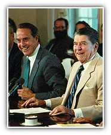
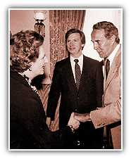

A Leader in the Senate
In 1984 Bob Dole was elected Senate Majority Leader. He continued to fight for senior citizens by working on a commission that saved Social Security from bankruptcy. His greatest accomplishments as Senate Republican Leader include leading the fight for President Reagan's agenda of economic growth, supporting President Bush and America's commitment to liberate Kuwait, and working with the most recent Congress to pass a budget that will reduce the size of the government and eliminate our deficit in seven years.
Leaving
the Senate
In Bob Dole's historic Congressional career, he never forgot his commitment to the common people of Kansas who helped him through his toughest days. It shows in his record: One of the first bills that he introduced helped reform the public school lunch program by reducing the price of school lunches for low-income students. One of his last was the balanced budget amendment, which would have saved our children and grandchildren from a stifling debt.
When Bob Dole retired on June 11, 1996 to run for President of the United States, he was the longest-serving Republican leader in Senate history.
Previous Page | 1 | 2 | 3 | 4 | 5 | 6 | 7 | 8 | 9 | Next Page

More opportunities. Smaller government. Stronger and safer families
Homepage | Register | Volunteers | Donations
About the Team | Dole Interactive | Newsroom | The Dole Agenda | On the Campaign Trail | Get Involved
Originally Paid for by Dole Kemp '96 Campaign Committee
Original Web Design by Presage Internet Campaigns
To Learn more about Bob Dole, Please Visit the Dole Institute
This Web Site is Presented for Educational Purposes by 4President.org